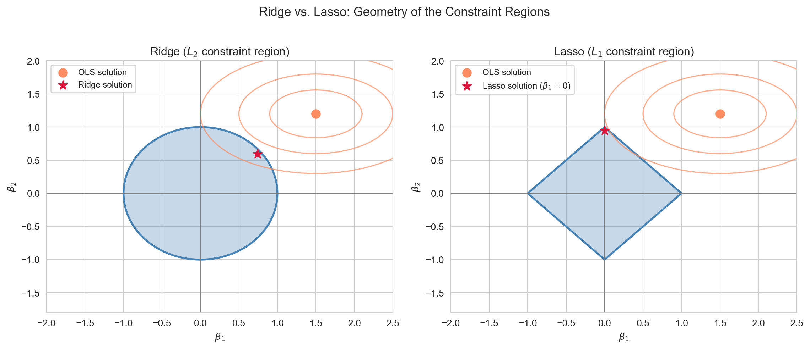

Shrinkage methods for regression including cross-validation, Ridge regression (L₂ penalty), Lasso (L₁ penalty), and Elastic Net, with Python implementation on the diabetes dataset.
Author
John Robin Inston
Published
May 22, 2026
Modified
May 22, 2026
ImportantLearning Objectives
Understand the limitations of subset selection and why they motivate regularization.
Describe \(k\)-fold cross-validation and the LOOCV shortcut via the hat matrix.
Define and compare Ridge (\(L_2\)), Lasso (\(L_1\)), and Elastic Net regularization.
Understand the geometric intuition for why Lasso induces sparsity.
Implement regularized regression in Python with cross-validated hyperparameter selection.
Libraries and Styling
import numpy as npimport pandas as pdimport matplotlib.pyplot as pltimport seaborn as snsimport statsmodels.api as smfrom sklearn.datasets import fetch_california_housing, load_diabetesfrom sklearn.preprocessing import StandardScalerfrom sklearn.linear_model import ( LinearRegression, Ridge, Lasso, ElasticNet, RidgeCV, LassoCV, ElasticNetCV,)from sklearn.model_selection import KFold, cross_val_score, train_test_splitfrom sklearn.metrics import mean_squared_errorsns.set_style('whitegrid')sns.set_palette('Set2')
Limitations of Subset Selection
Subset selection methods are powerful, but carry important limitations that become severe as \(p\) grows.
Limitation
Detail
Computational cost
Best subsets requires \(2^p\) fits — infeasible for \(p \gtrsim 30\)
Greedy, not global
Stepwise methods can miss the truly optimal subset
Discrete selection
Each predictor is either in or out — no gradation of importance
Instability
Small changes in data can produce very different selected subsets
Fails when \(p \geq n\)
The full model cannot be estimated when predictors outnumber observations
Regularization overcomes all of these: it is computationally cheap, globally optimised, produces continuous coefficient values, is stable, and works when \(p \gg n\).
Cross-Validation
Why cross-validate?
RSS, \(R^2\), and the likelihood are computed on the training data — the same data used to fit the model. The model has already seen these observations, so in-sample fit is optimistic. Cross-validation (CV) evaluates error on observations the model has not seen during fitting, giving an honest estimate of out-of-sample (generalisation) error.
Important\(k\)-Fold Cross-Validation
Randomly partition the \(n\) observations into \(k\) roughly equal folds.
For each fold \(j = 1, \ldots, k\): fit the model on the other \(k-1\) folds, predict on fold \(j\).
Report the average test error: \[\text{CV}_{(k)} = \frac{1}{n} \sum_{i=1}^n (y_i - \hat{y}_i^{(-\kappa(i))})^2,\] where \(\hat{y}_i^{(-\kappa(i))}\) is the prediction for observation \(i\) from the model fit without its fold.
\(k = 5\) or \(k = 10\) are standard choices. Leave-one-out CV (LOOCV) sets \(k = n\) — it has low bias but high variance and is computationally expensive for most methods.
The LOOCV shortcut for OLS
For ordinary least squares there is a closed-form shortcut that avoids refitting \(n\) times:
where \(e_i = y_i - \hat{y}_i\) is the ordinary residual and \(h_{ii}\) is the \(i\)-th diagonal of the hat matrix \(\mathbf{H} = \mathbf{X}(\mathbf{X}^\top\mathbf{X})^{-1}\mathbf{X}^\top\). Observations with high leverage \(h_{ii}\) have large influence on the LOOCV score. This formula is computationally free once \(\mathbf{H}\) is computed.
Model 10-fold CV MSE
------------------------------------------------
1 predictor (MedInc) 0.7013
3 predictors 0.6514
5 predictors 0.6189
Full (8 predictors) 0.5279
Cross-validation is also our main tool for choosing the regularization hyperparameter\(\lambda\).
Why Regularize?
When \(p\) is large relative to \(n\), or when predictors are highly correlated, \((\mathbf{X}^\top\mathbf{X})^{-1}\) becomes ill-conditioned. OLS coefficients have high variance — tiny changes in the data lead to large changes in \(\hat{\boldsymbol{\beta}}\).
Regularization adds a penalty on the size of \(\boldsymbol{\beta}\) to the least squares objective, trading a little bias for a large reduction in variance. The two equivalent formulations are:
For every \(\lambda \geq 0\) there is a corresponding budget \(t \geq 0\) that produces the same solution. At \(\lambda = 0\) the OLS solution is recovered; at \(\lambda \to \infty\) all coefficients are driven to zero.
Why standardise predictors?
The penalty \(\lambda \sum_j \beta_j^2\) penalises coefficients by their magnitude. If predictors are measured in very different units, the penalty falls disproportionately on the predictors with larger natural scales. The fix is to standardise every predictor to zero mean and unit variance before fitting:
Adding \(\lambda\mathbf{I}\) shifts every eigenvalue of \(\mathbf{X}^\top\mathbf{X}\) up by \(\lambda\), making the matrix invertible for any \(\lambda > 0\) regardless of multicollinearity. Ridge shrinks all coefficients toward zero but never sets them exactly to zero — all predictors are retained. It is particularly useful when predictors are correlated.
Lasso (\(L_1\) Penalty)
ImportantLasso — Least Absolute Shrinkage and Selection Operator
where \(\|\boldsymbol{\beta}\|_1 = \sum_j |\beta_j|\).
The \(L_1\) penalty induces sparsity: for large enough \(\lambda\), some \(\hat{\beta}_j\) are set exactly to zero, so Lasso simultaneously shrinks and selects predictors. There is no closed-form solution — fitting requires coordinate descent.
Why does sparsity happen?
In the constraint form, the \(L_1\) constraint region is a diamond with sharp corners on the coordinate axes. The RSS contours are ellipses expanding outward from the OLS solution. As the constraint tightens, the first contact between the ellipse and the diamond most often occurs at a corner — where one or more \(\beta_j = 0\) exactly. The \(L_2\) constraint region (a smooth sphere) has no corners, which is why Ridge never produces exact zeros.

Constraint regions for Ridge (L₂ ball, left) and Lasso (L₁ diamond, right). RSS contours are shown as ellipses centred at the OLS solution. The Lasso solution touches a corner, setting β₁ = 0 exactly.
where \(\alpha \in [0, 1]\) controls the mix: \(\alpha = 1\) is pure Lasso, \(\alpha = 0\) is pure Ridge.
Elastic Net combines the sparsity of Lasso with the grouping property of Ridge. When predictors are correlated, Lasso tends to arbitrarily select one from a group; Elastic Net tends to select the group together.
Practical guidance
Ridge
Lasso
Elastic Net
Variable selection
No
Yes
Yes
Correlated predictors
Handles well
Picks one arbitrarily
Selects group
Works when \(p > n\)
Yes
Yes (selects \(\leq n\))
Yes
Interpretability
All retained
Sparse
Sparse
Use Ridge when most predictors contribute something (dense signal).
Use Lasso when only a few predictors truly matter (sparse signal).
Use Elastic Net when predictors are correlated and sparse.
Regularization Paths
The regularization path shows how coefficients change as \(\lambda\) increases. Ridge shrinks all coefficients smoothly; Lasso sets some to exactly zero at a specific threshold.
Coefficient paths for Ridge (left) and Lasso (right) on California housing. Ridge shrinks all coefficients smoothly; Lasso zeroes some out, performing variable selection. The dashed red line marks the CV-selected λ.
Implementation: Diabetes Dataset
We demonstrate the full workflow on sklearn’s diabetes dataset: \(n = 442\) patients, \(p = 10\) predictors (age, sex, BMI, blood pressure, and six serum measurements), and a continuous response measuring disease progression one year after baseline. The predictors are already mean-centred and scaled.
ridge_model = Ridge(alpha=1).fit(X_train, y_train)lasso_model = Lasso(alpha=1).fit(X_train, y_train)enet_model = ElasticNet(alpha=1, l1_ratio=0.5).fit(X_train, y_train)print(f"Ridge (α=1) — Features retained: {(ridge_model.coef_ !=0).sum()}/10"f" Test MSE: {np.mean((ridge_model.predict(X_test) - y_test)**2):.2f}")print(f"Lasso (α=1) — Features retained: {(lasso_model.coef_ !=0).sum()}/10"f" Test MSE: {np.mean((lasso_model.predict(X_test) - y_test)**2):.2f}")print(f"ElNet (α=1) — Features retained: {(enet_model.coef_ !=0).sum()}/10"f" Test MSE: {np.mean((enet_model.predict(X_test) - y_test)**2):.2f}")
Ridge (α=1) — Features retained: 10/10 Test MSE: 3105.47
Lasso (α=1) — Features retained: 3/10 Test MSE: 3433.16
ElNet (α=1) — Features retained: 9/10 Test MSE: 5554.23
Method Test MSE # Features
----------------------------------------------------
OLS 2848.31 10
Ridge (α=1) 3105.47 10
Ridge (CV-tuned) 2810.61 10
Lasso (α=1) 3433.16 3
Lasso (CV-tuned) 2839.42 9
Elastic Net (CV-tuned) 2839.42 9
CV-tuned Ridge and Lasso consistently outperform the arbitrary \(\alpha = 1\) choice and are competitive with OLS on a problem where all 10 predictors are informative. On datasets where only a few predictors are truly relevant, Lasso’s variable selection advantage becomes more pronounced.